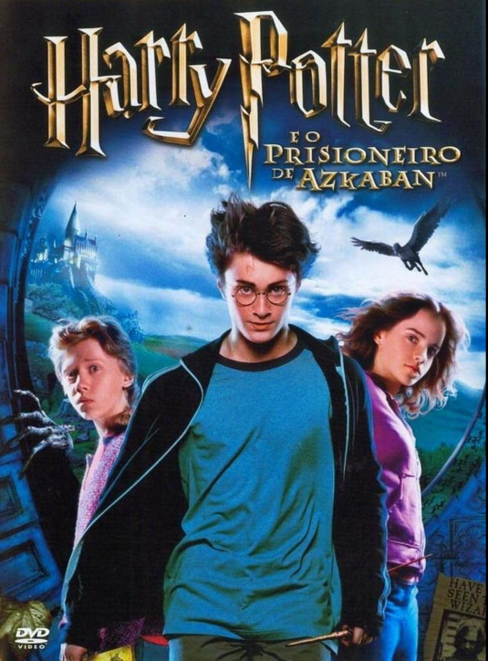

FILME 1
Madame teia
2024
FILME 2
Harry Potter 1
2001
FILME 3
Harry Potter 2
2002
FILME 4
Harry Potter 3
2003
FILME 5
Harry Potter 4
2005
IMDBFILME 6

Meninas Malvadas
2024
FILME 7
Harry Potter 5
2007
FILME 8
Harry Potter 6
2009
FILME 9
Harry Potter 7.1
2010
FILME 10
Harry Potter 7.2
2011